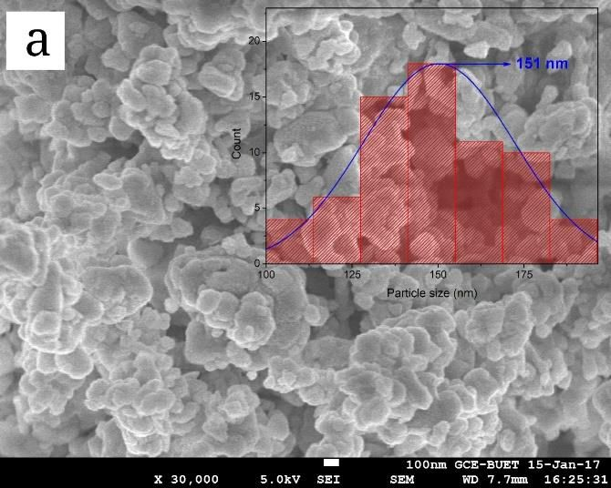
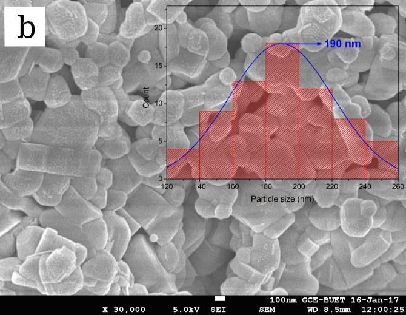
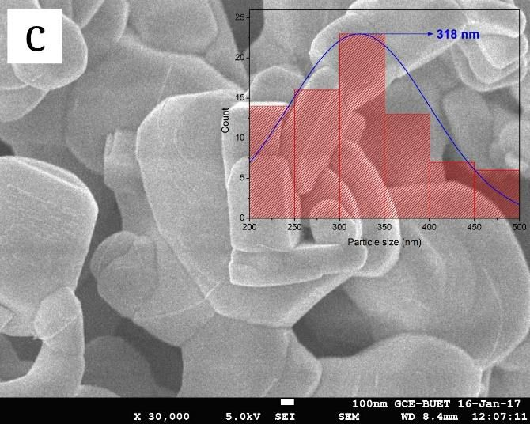
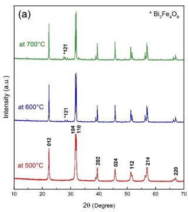
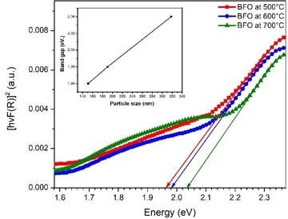
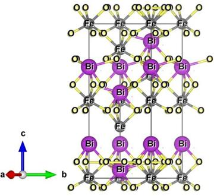
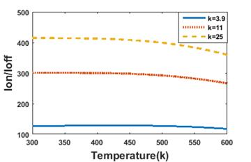
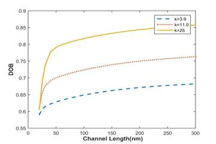
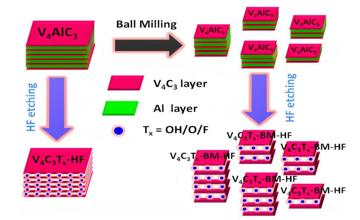
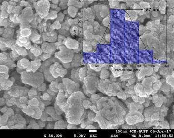

B.Sc. in Electrical and Electronic Engineering
2015 – 2021Ahsanullah University of Science and Technology (AUST), Dhaka
Major in electronics. Thesis on bismuth ferrite nanoparticles for photovoltaics.
I want to research how data and AI can carry clean-energy materials from the lab into reliable, large-scale production.
Open to funded PhD positions for 2027 and 2028 intakes.
I have synthesised and characterised bismuth-ferrite photovoltaic materials and co-authored work on carbon-nanotube transistors and MXene battery electrodes. Then I spent four years inside a multinational manufacturer, first in production engineering and then running a USD 67M+ material supply network at British American Tobacco. Now I lead AI software delivery for manufacturing clients at Aivelon. I fit labs working on battery or solar manufacturing, process analytics, or supply chains for energy materials.
In my BiFeO3 work, the annealing temperature alone decided whether secondary phases appeared and where the bandgap landed. At production scale, that window becomes a yield and cost problem. I want to build models that link synthesis and process parameters to material quality, so a plant can hold the window under real variation.
Inline sensing, defect detection and digital twins for electrode and cell production: the factory-side version of the electrode materials I reviewed in the MXene paper, using the plant data habits I built at BAT.
At BAT I watched a small demand shift in one shared raw material cascade into a bullwhip that nearly stopped the line, and I built a currency-risk tool to keep imports flowing in 2023. Battery and PV materials face the same volatility with higher stakes. I want to model sourcing, inventory and risk for them.
Manufacturing scale-up of energy materialsBattery and PV cell production analyticsProcess–structure–property modellingSupply chains for critical materialsMachine learning for manufacturingFunctional oxides and 2D materials
My thesis annealed BiFeO3 nanoparticles at three temperatures. Pick one to see how the particles and their optical bandgap changed.



Ideal for solar cells, about 1.5 eV
Figures from my published papers. Select one to enlarge it.






MXene based heterostructures for electrode materials of batteries: a review
IOP Conference Series: Materials Science and Engineering, vol. 1225, 012018 (IC-MAME 2021) Open access
Journal-indexed proceedings, 2022DOI

Full list and citations on Google Scholar.
Undergraduate thesis, AUST. Supervisor: Dr. Md. Meganur Rhaman, Professor, EEE
Synthesised BiFeO3 nanoparticles by the sol-gel method and annealed them at 500, 600 and 700 °C. Characterised structure with XRD, FESEM, TEM and EDS, and optical properties with UV-Vis-NIR. The 500 °C samples showed fewer secondary phases and a favourable bandgap for absorber layers. Led to the JNEP 2020 and IOP 2021 papers.
Undergraduate research, AUST. Supervisor: Safayat-Al Imam, Assistant Professor, EEE
Modelled non-ballistic effects (scattering, strain and tunnelling) in CNT-FETs. Showed how high-κ gate dielectrics strengthen electrostatic control, shorten the usable channel and suppress off-state current. Led to the IEMENTech 2020 and I2CT 2021 papers.
Before and after the tools and process changes I led. Grey is the starting point, colour is the result.
Also: 85% forecast accuracy on a USD 67M+ portfolio, every letter of credit executed through the 2023 forex crisis, and about £200K in Lean savings.
Aivelon, Dhaka
Software company building SaaS and generative-AI-as-a-service products, currently focused on manufacturing clients.
British American Tobacco Bangladesh, Dhaka
Planned packaging materials for a plant producing about 60 billion sticks a year.
British American Tobacco Bangladesh, Dhaka
Spare parts and maintenance readiness for the production line.
Apsara Trading Ltd., Dhaka
Ahsanullah University of Science and Technology (AUST), Dhaka
Major in electronics. Thesis on bismuth ferrite nanoparticles for photovoltaics.
The best way to reach me is email: plabon.mic@gmail.com. Based in Dhaka, Bangladesh, happy to talk across time zones.